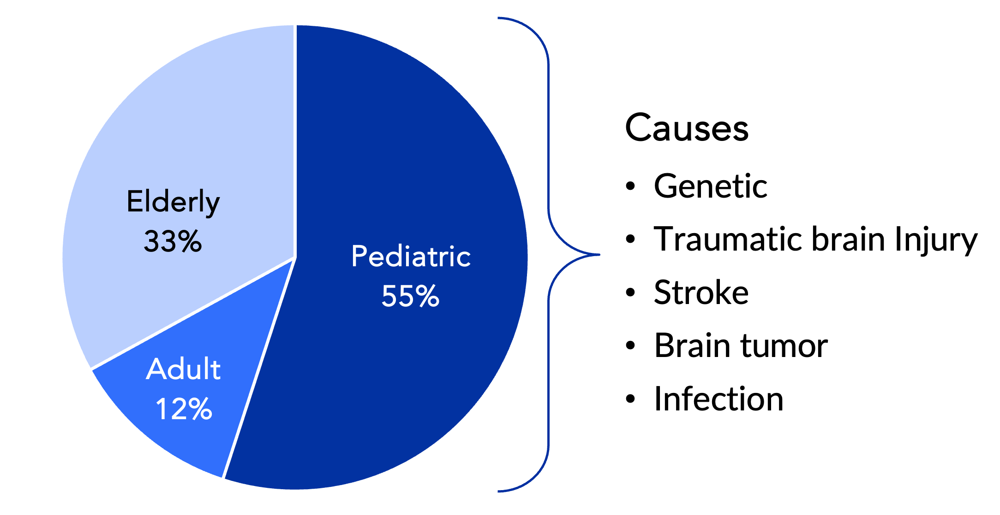

What is Hydrocephalus?
Hydrocephalus is a condition affecting 8 million patients globally (1 million in the US) where excess cerebrospinal fluid (CSF) accumulates in the brain, creating dangerous intracranial pressure. Without treatment, it leads to long-term health conditions and death.
Current Treatment
Shunts are implanted between the skull and the skin to drain fluid, but failure rates are alarmingly high—up to 50% revision rates in pediatric patients in year one, and 17-33% annual complication rates in adults.
Problem
Uncertainty about shunt function leads to unnecessary clinic and ER visits, damaging radiation exposure from scans, unnecessary surgeries, and long travel times to limited neuro specialists. For the healthcare system, these procedures aren't profitable, MRI and CT scans aren't able to show shunt function, neurosurgeons spend valuable time checking shunts instead of conducting other surgeries, and US hospital charges for hydrocephalus exceed $2 billion annually.

The Solution
HydroSense is a pressure sensor implanted in-line with a shunt that measures ICP, providing neurosurgeons and care teams with quantitative data to better understand a patient's condition.
System Components:
- Implanted Sensor: In-line pressure sensor integrated with existing shunt hardware
- HydroSense Puck: External device that connects to the implant using NFC-type technology to collect ICP data
- Mobile App: Clinician-facing application that connects to the puck via Bluetooth to view and analyze ICP data in real-time
- Secure Server: Cloud infrastructure that pulls data from the app via WiFi to store longitudinal ICP data for historical analysis


Core Application Features
Live ICP Monitoring: Real-time pressure waveform display showing both ICP (intracranial pressure) and MWA (mean wave amplitude) measurements. Clinicians can observe live readings over configurable time windows and save snapshots for longitudinal tracking.
Measurement Capture: Save ICP measurements with contextual data including patient position (standing, sitting, lying down), symptoms, and valve settings. This allows correlation between ICP readings and patient experience.
Historical Logbook: Access patient records remotely with a comprehensive view of all past ICP measurements, valve adjustments, and reported symptoms. The logbook provides trend analysis to identify patterns and inform treatment decisions.
ICP Study Templates: Define standardized measurement protocols to ensure consistent data collection across patients and clinical sites.

Market Research & Validation
Conducted extensive market research with 212 participants across 17 countries, including adult and pediatric neurosurgeons, neurosurgical PAs and NPs, patients, and hospital administrators. This resulted in 225 hours of co-development and 11 product iterations.
Key Findings:
- Surgeons indicated they would use HydroSense in 70-80% of patients with a new shunt
- Conservative pricing without reimbursement is ~$2,000 per unit
- "If you keep even one patient out of the ER, this will pay for itself"
- "ICP monitoring needs to become a standard of care and not only used for problematic patients"
- "This will dramatically change patient care, allowing people to respond to more than crisis but create better quality of life"

Development Timeline & Impact
Development Phases (2023-2026):
- 2023: Market research and foundational work
- 2024: Alpha hardware design and software requirements finalization
- 2025: Beta unit builds, hardware integration, formative usability testing, and app development under design controls
- 2026: FDA submission
Launch Strategy (2027-2029): Phased global rollout starting with US launch, followed by UK, Canada, Europe, Japan, China, and AU/NZ. Post-launch focus on BYOD (Bring Your Own Device) strategy and expanded indications for use.
Business Projections:
- Unit Price: $2,000 | Cost of Goods: $450
- Year 3 US market penetration: 70% of newly diagnosed patients (52,500 patients)
- Projected Gross Profits: $81.4M
Success Metrics: Adoption rate, increased usage, session time after onboarding, login frequency, logbook utilization, and remote study/patient app engagement.